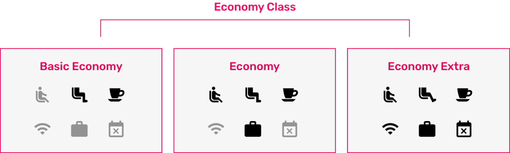

Priceline Fare Brands
Background
Branded fares are when airlines group a bunch of ancillaries (checked bag, WIFI, etc.) together into a fare. The higher the fare, the more ancillaries are included in your ticket.
Why do the airlines do this? On average worldwide, airlines only make a revenue of $6/passenger because costs are so high (eg. fuel). By charging for ancillaries and creating diffent types of fares, airlines can keep the base price down, meeting the need of customers who are transacting based on low price. If customers choose to, they can pay extra for a higher fare with more included in the flight.
Problem
Priceline was working with their top three airline partners, Delta, United, and American in order to sell fare brands on Priceline. A key problem to solve was each airline’s fare brands are different making it difficult for the custmer shopping on an OTA like Priceline, where they have the opportunity to compare hundreds of flights.
Goal
The main goal of Priceline’s air business and supply team was to continue to maintain strong partnerships with the airline partners and possibly open up contract negotiations for increased margins when selling higher fares. Technology needed an easy way to test and turn on different fares and design’s goal was to come up with a templated approach that would allow us to roll out fares for many different airlines so that it made since for the customers.
Team
My role was senior product designer. I partnered closely with two different product managers and a full-stack technology team. Our key staleholders were the air business team and Travelport, the GDS (global distribution system) that our APIs connected with.